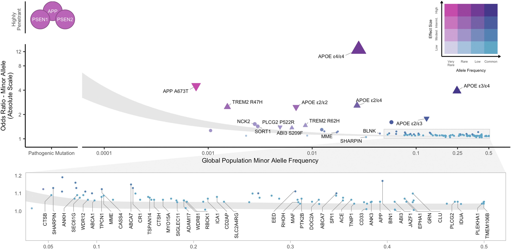

BSMS205 · Genetics
Allele Frequency
Chapter 20 · Part IV · Population Genetics
Today's central question
Rare
or
common?
One genome tells you almost nothing
- A harmless polymorphism in millions of people?
- A brand-new disease mutation in this one person?
- Somewhere in between?
From a single genome, you cannot tell.
Meaning lives in the population
Individual
- A private event
- Signal or noise?
- Unknown significance
Population
- Shaped by mutation
- Filtered by selection
- Randomised by drift
The modern reference dataset
141,456
people sequenced · gnomAD v2
- Hundreds of millions of variants cataloged
- Detects alleles present in one copy out of 282,912
- Karczewski et al. 2020, Nature
Roadmap for today
- Defining allele frequency
- How to calculate it · worked example
- Minor Allele Frequency (MAF)
- Variant categories by frequency
- How selection shapes frequency
- Summary & what comes next
§ 1
Defining
Allele Frequency
What fraction of copies carry this variant?
Allele frequency = the proportion of a specific allele
among all alleles at that locus in a population.
- Operates on a single locus, not the whole genome
- Measured within a population — frequencies differ between groups
- Ranges from zero (absent) to one (fixed)
Why humans need the factor of two
2
alleles per person per locus
- Humans are diploid
- One allele from mother
- One allele from father
- Each person contributes two to the population count
A concrete example
- Position on chromosome twenty-one:
chr21:2,232,323
- Most people: genotype A / A
- One person in gnomAD: genotype A / T (heterozygous)
- Everyone else: A / A
- Sample size: 141,456 people
Your task
What is the allele frequency of T at this locus?
Step one · count total alleles
141,456 people × 2 alleles = 282,912 total alleles
- Every person contributes two copies of chromosome twenty-one
- The denominator of our fraction
Step two · count the variant alleles
One heterozygote → 1 T allele
Everyone else → 0 T alleles
- Total observed: 1 T allele
- The numerator of our fraction
Step three · divide
1 ÷ 282,912 = 0.0000035
0.00035%
≈ three point five per million
Extremely rare — but detectable only at this sample size.
§ 2
The General
Formula
The formula
Allele frequency = variant alleles ÷ (2 × individuals)
Heterozygote contributes 1 variant allele.
Homozygote contributes 2 variant alleles.
Four scenarios in gnomAD
Total alleles in denominator: 282,912
| Scenario | Hets (AT) | Homs (TT) | T alleles | Frequency |
|---|
| Very rare | 1 | 0 | 1 | 0.00035% |
| Rare | 2 | 3 | 8 | 0.0028% |
| Low frequency | 10 | 0 | 10 | 0.0035% |
| More common | 0 | 10 | 20 | 0.0071% |
Look at the rare row: two heterozygotes plus three homozygotes gives two plus six equals eight T alleles.
§ 3
Minor Allele
Frequency (MAF)
Two alleles at one position
Major allele
92%
reference / "normal"
Minor allele
8%
MAF = 0.08
Why we track the minor, not the major
- The major allele is usually the reference baseline
- Variation, not uniformity, is what we study
- MAF is the natural axis for GWAS, population genetics, disease risk
- It also gives us a clean common vs rare shortcut
A rough rule of thumb
| Label | MAF | Intuition |
|---|
| Common | > 5% | Many people carry it |
| Low frequency | 1 – 5% | Uncommon but not rare |
| Rare | < 1% | Few people carry it |
A starting point only — as we'll see, real cutoffs vary by context.
§ 4
Variant Categories
by Frequency
The cutoffs are not universal
"The threshold of MAF in rare variants
has not yet been clearly defined."
- Published cutoffs vary from 0.1% to 5%
- Depends on disease, penetrance, sample size, method
- Momozawa & Mizukami 2021, J Hum Genet
Different fields, different cutoffs
| Study | Common | Low | Rare | Ultra-rare |
|---|
| 1000 Genomes 2022 | > 1% | 0.5 – 5% | ≤ 1% | Singletons |
| Schizophrenia 2022 | > 1% | — | < 0.1% | Singletons only |
| AD / dementia GWAS | > 5% | 1 – 5% | < 1% | — |
| COVID-19 severity | ≥ 5% | 1 – 5% | 0.1 – 1% | < 0.1% |
Byrska-Bishop 2022 · Akingbuwa 2022 · Andrews 2023 · Fallerini 2021
Why the variation?
- Disease biology — highly penetrant disorders need stricter cutoffs
- Sample size — large cohorts can resolve finer frequency tiers
- Technology — array GWAS (> 5%), WGS (down to singletons)
- Functional biology — 90% of singleton heritability is at MAF < 0.01%
A working framework
| Category | MAF | Allele age | Selection |
|---|
| Common | > 5% | Many generations | Neutral / weak |
| Low-frequency | 1 – 5% | Intermediate | Mild |
| Rare | < 1% | Recent — hundreds to thousands of years | Purifying |
| Ultra-rare | < 0.1% | Very recent | Strong purifying |
| Private / singleton | ≈ 0% | 1 – 10 generations · often de novo | Unfiltered |
Common variants · old survivors
- Persisted through many generations
- Mostly non-coding or low functional impact
- Selection had time — and did not remove them
- Plenty of people carry them → ideal for GWAS
Rare variants · selection's fingerprint
A striking gnomAD result
Most loss-of-function variants
in gnomAD are singletons.
- Breaks a gene → reduces fitness → selection removes it
- New LoF variants keep arising through mutation
- They just can't spread before selection catches them
Karczewski et al. 2020, Nature
Private variants · untested by evolution
- Too new for selection to judge
- Often arise de novo in this generation
- Most will disappear within a few generations
- A rare few persist — or, if lucky, spread
§ 5
How Selection
Shapes Frequency
Selection is a filter
- Beneficial → passes through, spreads
- Neutral → drifts randomly, sometimes survives
- Harmful → caught and removed
A variant's frequency is a record of which process dominated.
The more severe, the rarer
| Variant type | Protein effect | Typical frequency |
|---|
| Synonymous | No amino acid change | Often common |
| Missense | One amino acid changed | Intermediate |
| Nonsense | Protein truncated | Almost always rare |
A gradient of selection intensity, visible in the data.
When does selection even work?
s > 1 / Ne
- s — selection coefficient (fitness impact)
- Ne — effective population size
- Below this threshold → variant behaves as neutral → drift wins
Population size sets the floor
Large Ne
- 1 / Ne is tiny
- Even weak selection is felt
- Deleterious alleles purged
- Few mildly harmful variants persist
Small Ne
- 1 / Ne is large
- Only strong effects overcome drift
- Mildly harmful variants behave neutrally
- More deleterious alleles persist
Humans: Ne ≈ 10,000 – 50,000 (depends on ancestry).
Why LoF variants persist despite selection
- Mutation rate > 0 → new LoF variants constantly arise
- Finite population → selection needs time to act
- Some linger for a few generations before being removed
- A handful drift upward briefly before selection catches up
Frequency vs effect size · the master picture

Alzheimer's disease architecture · Andrews et al. 2023, EBioMedicine 90:104511 (CC BY-NC-ND 4.0).
APP / PSEN1 / PSEN2: rare + huge effect · APOE ε4/ε4: ~2% + OR ~12 · GWAS hits: common + small effect.
§ 6
Summary
What to take away
- Allele frequency = variant alleles ÷ (2 × N)
- Categories reflect allele age and selection intensity
- LoF variants are mostly singletons — selection's fingerprint in gnomAD
- Large Ne lets selection see even weak effects
- Big effect size → cannot reach high frequency
Why this matters in practice
- Variant interpretation — pathogenic vs benign hinges on frequency
- Study design — GWAS vs rare-variant burden tests
- Disease architecture — common + small, or rare + large?
- Drug target prioritisation — protective LoFs are gold
Next lecture
Why do the same variants
have different frequencies
in different populations?
Chapter 21 · Population Structure